就在最近，终于为自己的电脑加装了固态。在装完固态之后，首先面临的问题就是如何将原先安装在机械硬盘上的linux系统迁移到固态上。还要考虑后续配置的问题。
本文主要讲述在迁移Linux系统到新的固态硬盘上所遇到的问题以及找到的相应的解决方法。
这里先给出系统迁移以及相关配置完成之后的机械硬盘和固态硬盘的简单测速对比:

引入
拆开电脑，直接加装固态,顺便清清灰尘，换一下硅脂(ps: 这不知道是我第几次拆电脑了…,表示以后再也不买GPU风扇了，这已经是第二次失败的购买经历了(除非得到与原来匹配的风扇一致的风扇，不然我是不再换了).
清尘换硅脂:
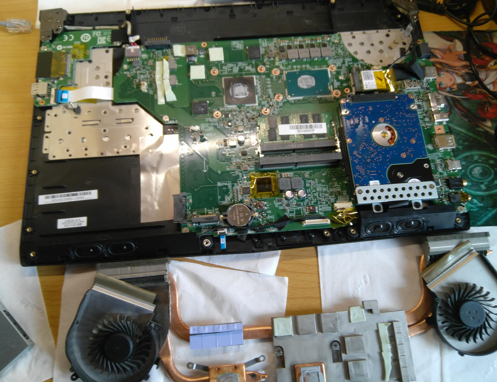
加装固态和散热板:
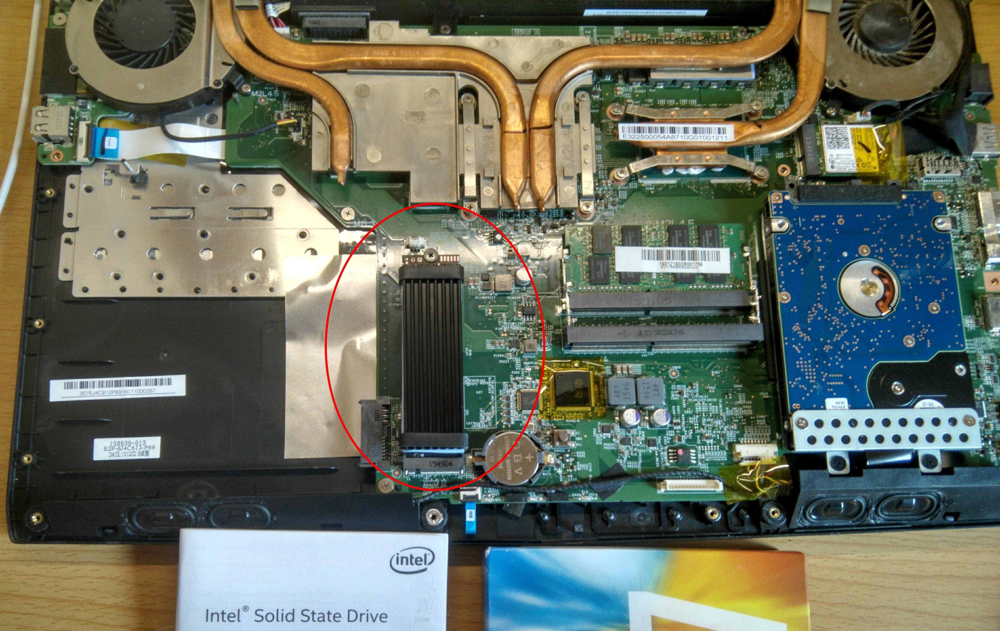
关于固态如何购买挑选，需要很好的了解自己电脑能够支持的固态类型和市场所提供的固态类型，并综合各种因素才能做出最好的选择。这里我推荐几篇个人觉得不错的文章:
- https://www.laptopmag.com/articles/laptop-ssd-guide
- https://www.tomshardware.com/reviews/ssd-buying-guide,5602.html
- https://www.velocitymicro.com/blog/nvme-vs-m-2-vs-sata-whats-the-difference/
- https://blog.csdn.net/u010109732/article/details/79032845
- https://www.zhihu.com/question/48972075
- https://www.pc841.com/article/20180914-92342_all.html
- https://www.techadvisor.co.uk/test-centre/storage/best-ssd-2018-3235200/
以上推荐文章仅作为参考。
迁移系统
准备
进入原先的linux系统，对已经安装上的固态硬盘进行分区。因为我之前在没有固态之前，在机械硬盘上就已经安装了三个系统(win10, manjaro, kali),因此在分区时，我是考虑只把两个linux迁移到固态上，毕竟win10现在已经基本不使用了，并将机械硬盘上的EFI分区也迁移到固态上。分区这里，可以按照自己的需求对固态硬盘进行分区。
分区工具的选择，随意，哪个顺手用哪个，例如:gparted, fdisk, parted,还有各种桌面自带的分区工具。我是使用的是fdisk:
例如:
1 | sudo fdisk /dev/nvme0n1 |
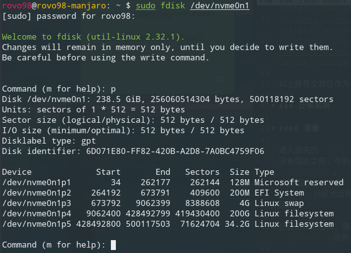
这里我已经分好区了的，具体的操作在fdisk中进行:
1 | Generic |
例如创建EFI分区:
1 | Command (m for help): n |
请注意先查看所执行的分区操作是不是你想要的再进行最后的保存设置
其他的分区创建类似EFI的创建，swap分区需要指定为Linux swap分区，作为linux数据分区的分区在创建时默认就是linux filesystem类型了，不需要更改，之后对创建的分区进行格式化:将EFI格式化为fat32，将linux数据分区格式化ext4； 先通过sudo fdisk -l或lsblk查看已经创建分区对应的设备名,例如:sudo fdisk -l:
1 | Disk /dev/nvme0n1: 238.5 GiB, 256060514304 bytes, 500118192 sectors |
lsblk 查看分好的磁盘分区:
1 | NAME MAJ:MIN RM SIZE RO TYPE MOUNTPOINT |
对特定的分区进行格式化,例如:
1 | # 对于linux数据分区 |
注意: 执行每条格式化命令前，必须确认指定的分区是否是你想要格式化的分区
做好这些准备之后，就可以进行系统的迁移了
系统迁移操作
对于Linux系统，我们只需要知道Linux一切皆文件就行了。因此对于系统的迁移就变得简单了，可以使用dd,打包压缩然后解压缩，有关系统备份和恢复可以参看Arch wiki给出的:https://wiki.archlinux.org/index.php/System_backup.这里我是使用的是tar结合pigz(什么是pigz?)解压缩工具进行备份和恢复:
备份(打包压缩)
1 | sudo tar --use-compress-program=pigz -cvpf /run/media/rovo98/Chester\ bennington/LP/GHOST/manjaro_backup_2018.10.7.tgz --exclude=/proc --exclude=/sys --exclude=/mnt --exclude=/run/media --exclude=/lost+found / |
恢复到目标硬盘分区上(解包解压缩):
先目标分区挂载到/mnt下，如:/mnt/manjaro
1 | mount /dev/nvme0n1p4 /mnt/manjaro |
1 | sudo tar --use-compress-program=pigz -xvpf /run/media/rovo98/Chester\ bennington/LP/GHOST/manjaro_backup_2018.10.7.tgz -C /mnt/manjaro |
完成后需要手动创建，上面打包压缩是排除的文件夹:/proc, /sys, /mnt, /run, /lost+found.
详细备份和恢复过程可以参考查看:Arch上的备份还原
修复Grub、fstab文件以及refind引导管理
首先将/proc,/run,/dev,/sys重新挂载，让目标分区上的系统也拥有这些内容:
1 | mount /proc /mnt/manjaro/proc |
这些目录必须重新挂载，不然，当chroot切换进入目标系统之后，将无法获取一些系统信息，如：设备, 磁盘分区信息等.
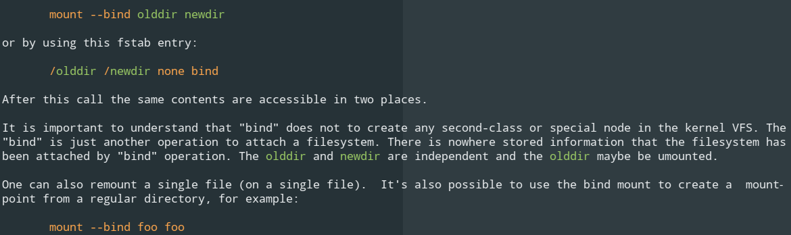
在chroot到目标系统之前，需要挂载EFI分区到/mnt/manjaro/boot/efi（refind管理文件默认位置）下：
1 | mount /dev/nvme0n1p2 /mnt/manjaro/boot/efi |
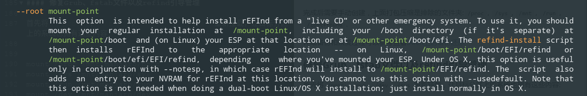
chroot到目标系统中，进行之后的操作
1 | chroot /mnt/manjaro |
更新fstab文件
获取相应分区的UUID，以更新fstab文件和/etc/default/grub文件:blkid:
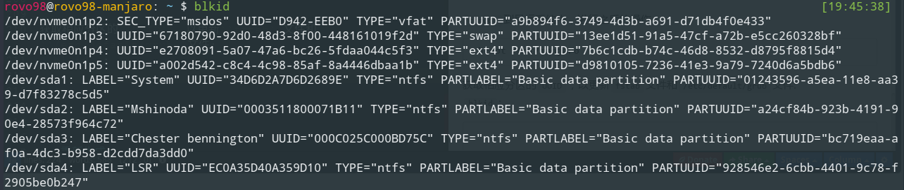
或
ls -l /dev/disk/by-uuid:
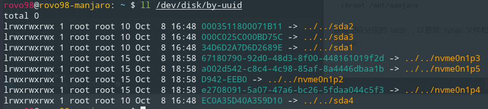
更新fstab文件:
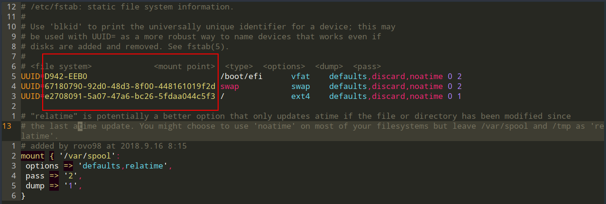
主要修改挂载项以及对应的UUID，有关fstab文件的详细内容可以参考https://wiki.archlinux.org/index.php/Fstab
修复Grub
重新生成Grub
1
sudo grub-install --target=x86_64-efi --efi-directory=/boot/efi --bootloader=Manjaro --recheck
更新Grub配置文件
1
2
3sudo update-grub
或
sudo grub-mkconfig -o /boot/grub/grub.cfg
注意：如果此过程中出现以下提示信息:
EFI variables are not supported on this system.
需要先安装efibootmgr, dosfstools以及grub包，然后重新尝试重新生成Grub并更新其配置文件.
若仍出现该信息，则先退出chroot环境，并加载efivarfs模块:
1 | sudo modprobe efivarfs |
然后再进入chroot环境，执行:
1 | mount -t efivarfs efivarfs /sys/firmware/efi/efivars |
再重新生成Grub并更新Grub配置文件就好了。
重新配置refind
对之前的refind配置文件进行备份，保留主题文件themes及refind.conf就好了，其余的文件在执行refind-install时会自动生成.
1 |
|
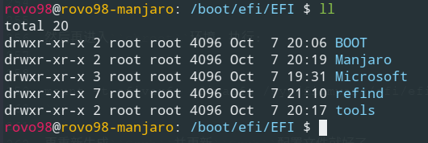
可以使用efibootmgr管理启动项，例如:efibootmgr查看当前所有的启动项，efibootmgr -Bb xxxx来删除不要的启动项，详细使用可以man efibootmgr来查看。
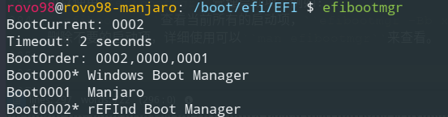
其中的windows系统启动项通过PE用UEFI引导修复生成即可(需要注意的是老旧的PE识别不了nvme固态)。
以上就是迁移Linux系统的完整过程了
遇到的问题
在做完上面的所有操作，并将之前机械硬盘上的EFI分区等等(除Win10系统之外)都删除之后，重新启动进入固态盘上的系统，在Grub引导过程出现UUID=***************找不到的信息，经过查看之后发现，在Grub引导时居然没有挂载我那块nvme固态。
通过了解发现Grub2.2版本并不支持nvme的固态，可以使用安装bootloader来进行引导。PS: 但我Manjaro安装的Grub是2.3版本的，理论上是支持的。
通过一番查找之后，终于找到了解决方法:
添加加载模块
sudo vim /etc/mkinitcpio.conf1
2
3
4
5
6...
- MODULES = ""
+ MODULES="nvme"
...更新
mkinitcpio1
2
3#参数说明，详细可以通过man查看
-p, --preset preset
Build initramfs image(s) according to specified preset. This may be a file in /etc/mkinitcpio.d (without the .preset extension) or a full, absolute path to a file. This option may be specified multiple times to process multiple presets.更新Grub
1
2
3sudo update-grub
或
sudo grub-mkocnfig -o /boot/grub/grub.cfg
再次重启之后，便可以成功进入系统了。
参考链接:http://blog.51cto.com/shenfly231/1918426, 若要安装bootloader也可以参考该链接。
SSD优化
开启Trim功能
关于什么是TRIM?：
SSD TRIM is an Advanced Technology Attachment (ATA) command that enables an operating system to inform a NAND flash solid-state drive (SSD) which data blocks it can erase because they are no longer in use. The use of TRIM can improve the performance of writing data to SSDs and contribute to longer SSD life.
了解可以参考: https://searchstorage.techtarget.com/definition/TRIM，以及Arch wiki上的:
https://wiki.archlinux.org/index.php/Solid_state_drive#TRIM
Most SSDs support the ATA_TRIM command for sustained long-term performance and wear-leveling. A techspot article shows performance benchmark examples of before and after filling an SSD with data.
As of Linux kernel version 3.8 onwards, support for TRIM was continually added for the different filesystems. See the following table for an indicative overview:
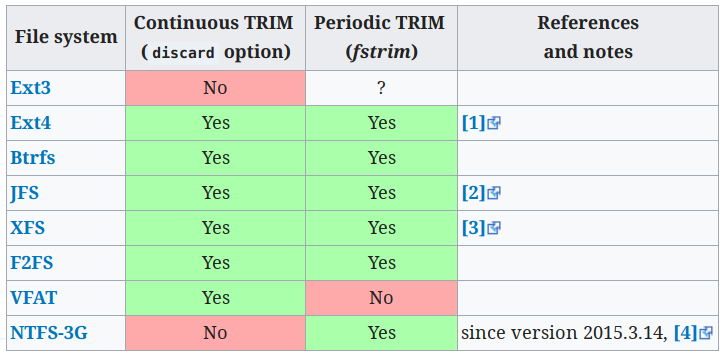
在使用Trim功能之前需要查看固态硬盘是否支持，否则可能造成数据丢失:
1 | lsblk --discard |
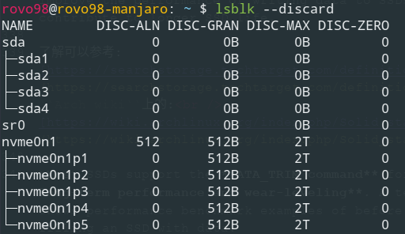
DISC-GRAN和DISC-MAX不为0则表示支持，详细查看上面的Arch Wiki给出的文章。
关于使用的Trim方式，我使用的Continuous TRIM(详见Arch Wiki)
即在/etc/fstab文件的挂载项中添加参数discard
1 | - UUID=D942-EEB0 /boot/efi vfat defaults,noatime 0 2 |
IO调度器选择
一般来说，IO调度算法是为低速硬盘准备的，对于固态，最好是不使用任何IO调度器，或使用对硬盘干预程度最低的调度算法。
- 查看当前固态的IO调度器:
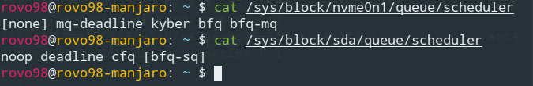
可以看到我当前固态没有使用任何调度器，而机械硬盘使用的是bfq-sq. 修改IO调度器(临时的):
1
echo noop > /sys/block/sda/queue/scheduler
要永久生效则需要添加编写开机自启动脚本
详见参考链接.
更多信息以及详细的内容可以参考下面给出的参考链接.
参考链接:
另外
更多有关Linux VM性能调优的可以参考:
https://lonesysadmin.net/tag/linux-vm-performance-tuning/